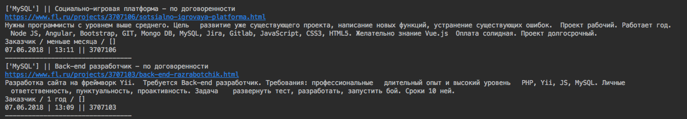
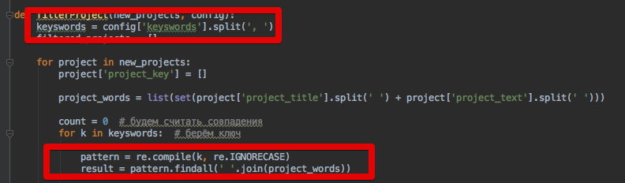
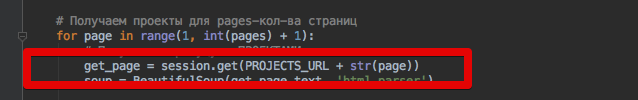
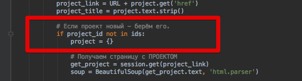

Наконец-то я "докатился" до того, что начал переписывать парсер фриланс-биржи FL.ru. До этого он был на php, что доставляло мне некоторые неудобства в использовании и поддержки. Теперь он на Python.
Что умеет парсер:
- Новые проекты отправляются на email(наверное самая важная функция)
- Отображает ключевые слова проекта и кол-во вхождений по ним - это иногда полезно, чтобы понять какие ключи добавить, а какие убрать.
- Разумеется, отображает заголовок и текст проекта.
- Кроме этого отображает - Дата/время публикации проекта, ID проекта, ссылка на проект, "стаж" заказчика

- Понятное дело, что ищет проекты по ключевым словам - поиск выполняется по регулярному выражению, т.о. нет нужды писать в ключах, например, склонения и/или спряжение, также поиск стал регистроНезависимым.

- Поиск проектов по заданному кол-ву страниц

- Проекты, в которых ВЫПОЛНЯЛСЯ поиск - игнорируются - парсер "запоминает" просмотренные проекты, снижая нагрузку на сайт и, тем самым, меньше обращая на себя внимание.

Так как парсер написан на python, его можно запустить на любой системе.
В планах реализовать: отправку в Telegram, сделать десктопный(Tkinter или PyQT) и web-варианты запуска. Ну и, конечно же, автоОтветы.